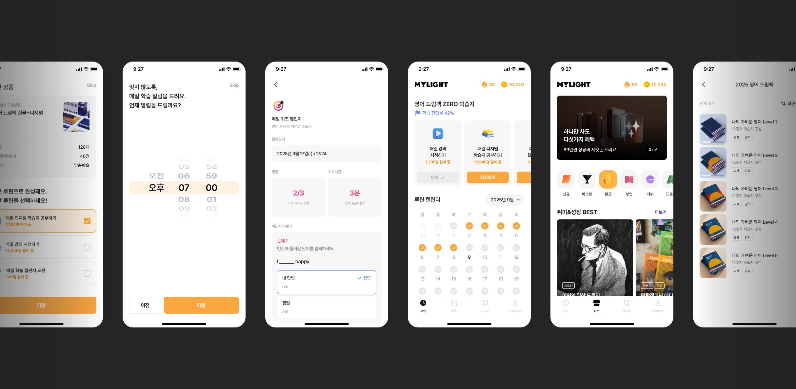
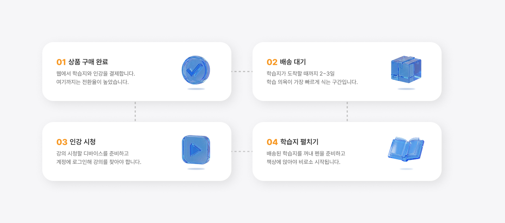
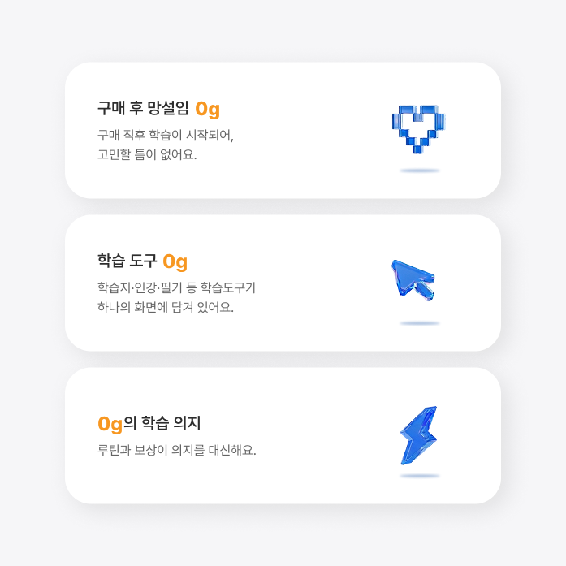
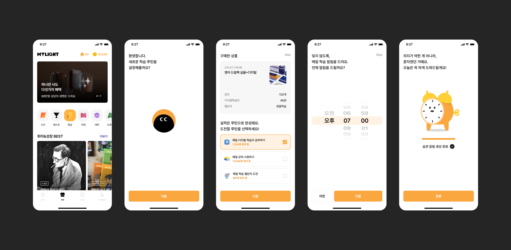
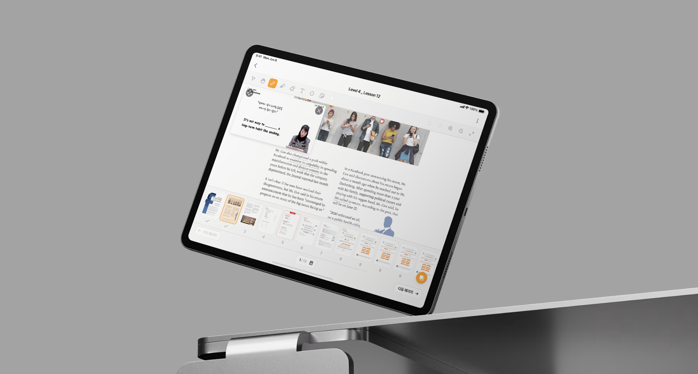
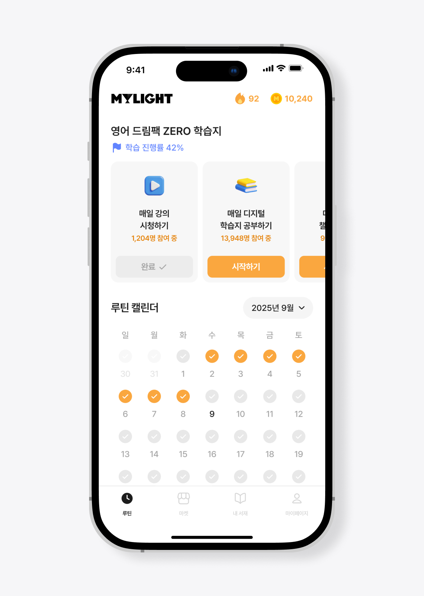
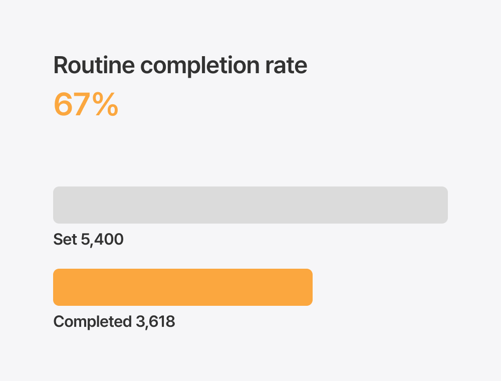
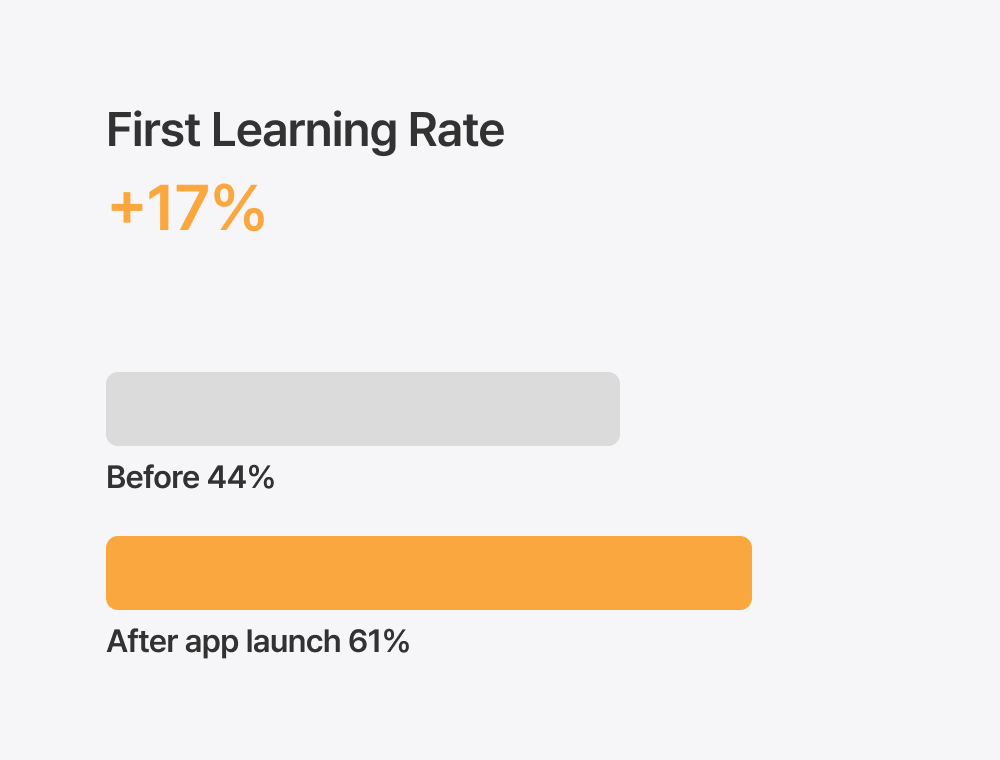

MyLight Application
마이라이트는 가벼운학습지 브랜드의 학습지와 인강을 웹에서 판매하는 서비스였습니다. 구매 전환은 잘 이루어졌지만, 학습지를 사고도 실제로 공부하지 않는 유저가 많았습니다. 웹에서는 구매 이후의 학습 경험을 제공할 수 없었기에, 구매에서 학습까지 하나의 경험으로 연결하는 모바일 앱을 새롭게 설계한 프로젝트입니다. 가벼운학습지의 가벼움을 0g이라는 설계 원칙으로 재해석하여, 학습 시작의 모든 마찰을 제거하는 것을 목표로 했습니다.
Web → App
신규 출시
First Learning Rate
+17%
루틴 완료율
67%
Date
2025. 01
Role
Product Design
Type
Application

구매 ≠ 학습
학습지 시장의 고질적인 문제는 구매와 학습 사이의 간극입니다. 오프라인 학습지는 배송까지 기다려야 하고, 인강은 별도 플랫폼에서 찾아야 합니다. 학습 도구가 물리적으로 분산되어 있어, 공부를 시작하려면 의지와 준비가 필요합니다.
마이라이트 웹 서비스도 같은 문제를 안고 있었습니다. 구매 전환율은 높았지만, 구매 이후 실제 학습으로 이어지는 비율은 낮았습니다. 학습지를 사는 것과 학습지로 공부하는 것 사이에 시스템적 연결이 없었기 때문입니다.
학습지를 받은 뒤 혼자의 의지에만 의존해야 하는 구조에서는, 구매 전환이 아무리 좋아도 학습 전환으로 이어지지 않습니다. 사게 만드는 것이 아니라 하게 만드는 것이 진짜 과제였습니다.

학습 시작의 무게를 없애다
문제의 본질은 구매와 학습 사이에 마찰이 너무 많다는 것이었습니다. 구매 완료 후 실제 공부를 시작하기까지 여러 단계가 끼어 있고, 그 각각이 이탈 포인트가 됩니다. 단계를 줄이는 것이 아니라, 아예 없애야 했습니다.
가벼운학습지라는 브랜드 이름에서 힌트를 얻었습니다. 물리적 학습지의 가벼움을 넘어, 학습 시작의 모든 무게를 0으로 만들자는 것. 이것이 0g이라는 설계 원칙의 출발점입니다.
0g은 단순한 마케팅 메시지가 아닙니다. 앱의 모든 설계 결정을 관통하는 기준입니다. 이 동선은 0g인가? 사용자가 아무런 준비 없이 바로 학습을 시작할 수 있는가? 이 질문을 기준으로, 구매 동선부터 학습 공간, 루틴 시스템까지 모든 기능을 설계했습니다.
이 원칙 아래 두 가지 핵심 과제가 도출되었습니다. 첫째, 구매와 학습 사이의 간극을 제거하는 것. 둘째, 개인의 의지가 아닌 시스템이 학습을 이끄는 구조를 만드는 것.

사는 순간 학습이 시작되는 구조
웹에서 검증된 구매 플로우를 모바일 환경에 맞게 재설계하면서, 핵심적으로 달라진 점은 구매 완료 이후의 경험입니다. 카테고리별 탐색, 상세 정보 확인, 결제까지의 동선은 모바일에 최적화하되, 결정적 차이는 구매 직후에 만들었습니다.
학습지를 구매하면 곧바로 내 학습 공간에 추가됩니다. 구매 완료 화면에서 지금 학습 시작하기 버튼 하나로 바로 학습지를 열 수 있습니다. 배송 대기, 별도 앱 설치, 계정 연동 같은 단계가 전혀 없습니다. 구매에서 학습까지의 무게가 0입니다.

필기와 인강, 하나의 화면에서
구매-학습 간극 제거의 두 번째 축은 학습 도구의 통합입니다. 기존에는 종이 학습지를 펼치고, 별도의 플랫폼에서 인강을 찾아 재생해야 했습니다. 학습 도구가 물리적으로 분산되어 있었기 때문에, 공부를 시작하는 것 자체가 준비를 요구하는 행위였습니다.
앱 안에서 학습지에 직접 필기하며 자습할 수 있고, 해당 학습지에 연결된 인강을 바로 시청할 수 있습니다. 학습지 위에 필기하면서 모르는 부분은 인강으로 즉시 확인하고, 다시 필기로 돌아오는 흐름이 자연스럽게 이어집니다. 물리적 학습지와 동일한 학습 밀도를, 스마트폰 하나로 제공합니다. 0g, 학습 도구의 무게가 0입니다.

의지 대신 구조가 이끄는 학습
구매-학습 간극을 없앴다면, 다음 과제는 학습이 꾸준히 지속되게 만드는 것이었습니다.
구매한 학습지에 대해 유저가 직접 학습 루틴을 설정할 수 있습니다. 요일별 학습 분량을 정하고, 매일 알림을 받으며 꾸준히 공부할 수 있는 구조를 만들었습니다. 앱을 열면 오늘 해야 할 학습이 바로 보이기 때문에, 뭘 할지 고민하는 시간 자체가 사라집니다.
루틴을 달성하면 포인트를 지급하여 학습에 대한 즉각적인 보상을 제공합니다. 적립된 포인트는 다음 학습지 구매에 사용할 수 있어, 학습 → 루틴 달성 → 포인트 적립 → 다음 학습지 구매 → 학습으로 계속 이어지는 루프를 설계했습니다. 개인의 의지가 아닌, 시스템이 학습을 지속시키는 구조입니다. 0g, 시작에 필요한 의지의 무게가 0입니다.

구매에서 학습까지, 하나의 경험으로
앱 출시 이후, 루틴 기능을 설정한 유저의 루틴 완료율은 67%를 기록했습니다. 학습지를 구매하고 실제로 학습까지 이어지는 전환율이 유의미하게 상승했으며, 포인트 보상 시스템은 자연스럽게 재구매로 이어지는 흐름을 만들어냈습니다.
이 프로젝트의 핵심은 단순한 웹→앱 전환이 아닙니다. 학습지를 사는 것과 학습지로 공부하는 것 사이의 구조적 간극을 프로덕트로 메운 것입니다. 0g이라는 설계 원칙 아래, 구매 동선·학습 공간·루틴 시스템이 하나의 경험으로 연결되면서, 마이라이트는 학습지 판매 플랫폼에서 자기주도 학습 플랫폼으로 포지셔닝을 전환할 수 있었습니다.

